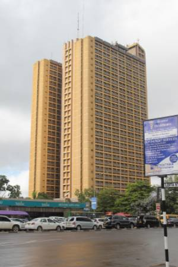
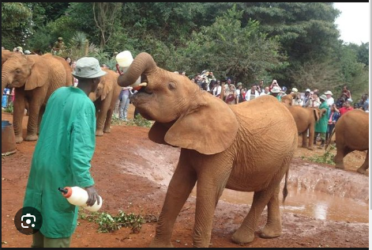
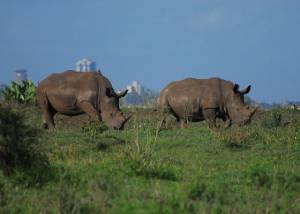
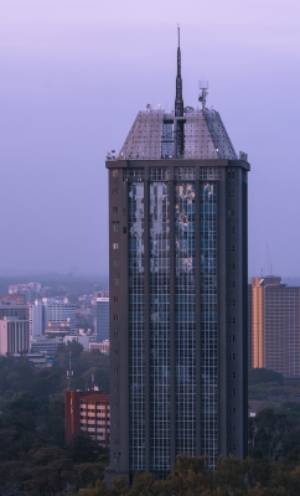
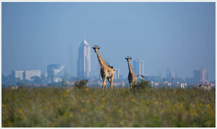

The City in the Sun
The name "Nairobi" has its origins in the Maasai language, which is spoken by the Maasai people in East Africa. The word "Nairobi" is derived from the Maasai phrase "Enkare Nairobi," which translates to "cool waters" or "place of cool waters." The name refers to the Nairobi River, which flows through the city. The river was known for its clear and cool waters, and it played a significant role in the early settlement of the area. The Maasai people, as well as other indigenous communities, recognized the importance of the river as a water source and a gathering place. When the British colonial authorities established a railway depot in the area in 1899, they adopted the name "Nairobi" for the new settlement. The site was chosen due to its strategic location along the railway line connecting Mombasa to Uganda. Over time, Nairobi grew into a major urban center and eventually became the capital of Kenya when the country gained independence in 1963. The name "Nairobi" continues to represent the city's history, geography, and cultural heritage. It symbolizes the significance of water resources and the blending of different communities that have contributed to the city's growth and development.

Emigration Center

Animal Orphanage

Rhino Orphange

Monument Buildingi

National Park
Statistics and Demogrphics
Nairobi is the capital and largest city of Kenya. As of the latest estimates in 2021, the population of Nairobi is approximately 4.7 million people. It is a rapidly growing city with a high population density. Area: Nairobi covers an area of about 696 square kilometers (269 square miles). Urbanization: Nairobi is a highly urbanized city, characterized by tall buildings, bustling streets, and a vibrant cityscape. It is a major economic and commercial hub in East Africa. Economy: Nairobi is the economic center of Kenya and contributes significantly to the country's GDP. It is home to various industries, including finance, manufacturing, trade, telecommunications, and services. The city hosts the Nairobi Securities Exchange, which is one of the largest stock exchanges in Africa. Tourism: Nairobi is a popular tourist destination, serving as a gateway to wildlife safaris and national parks in Kenya. Tourists often visit Nairobi National Park, located on the outskirts of the city, to experience wildlife within close proximity to the urban area. The city also offers cultural attractions, museums, markets, and a vibrant nightlife. Education: Nairobi has a well-developed education system with numerous schools, colleges, and universities. The city is home to prestigious educational institutions such as the University of Nairobi, Strathmore University, and Kenyatta University. Transportation: Nairobi has a well-connected transportation network. The city has Jomo Kenyatta International Airport, the largest airport in East Africa, which serves as a regional hub for air travel. Nairobi also has a railway network, bus services, and matatus (minibus taxis) that provide transportation within the city. Cultural Diversity: Nairobi is a melting pot of diverse cultures and ethnicities. It is home to people from various Kenyan tribes as well as a significant number of expatriates and immigrants from different parts of the world. This cultural diversity is reflected in the city's cuisine, festivals, and arts scene. Challenges: Nairobi, like many rapidly growing cities, faces various challenges. These include traffic congestion, inadequate infrastructure, informal settlements (slums), and socio-economic disparities. The government and local authorities are working towards addressing these challenges and improving the quality of life for residents..